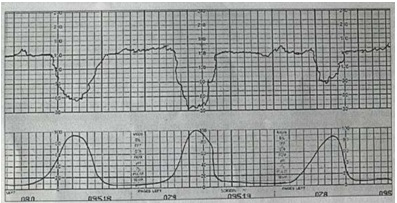
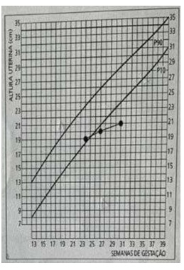
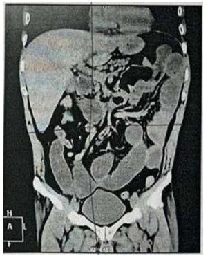
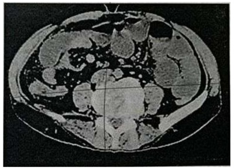
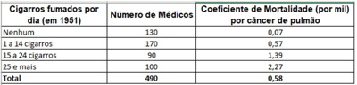

Questão 1 · Diagnóstico · Pediatria · 4000151673Dentre as a rmações abaixo, selecione aquela que NÃO é correta com relação aos anticorpos IgG anti-Toxoplasma gondii na criança com suspeita de toxoplasmose congênita.
A A ausência de IgM, mesmo na presença de altos títulos de IgG ao nascimento, exclui o diagnóstico de toxoplasmose congênita.
B Embora os anticorpos IgG maternos transferidos passivamente para o feto tenham meia-vida de aproximadamente um mês, esses podem ser detectados na criança por diversos meses, geralmente desaparecendo completamente com 1 ano de idade. 6 meses
C A produção dos anticorpos IgG na criança infectada e não tratada geralmente é detectável em torno de três meses após o nascimento. Dessa maneira, o declínio dos títulos observado do nascimento até esse período não permite afirmar com certeza que a criança não seja infectada.
D Na criança tratada, a detecção dos anticorpos IgG naturalmente produzidos pode ser verificada somente após seis meses, sendo recomendada sua monitorização até pelo menos 1 ano de idade.
Questão 2 · Pediatria · Clampeamento tardio do cordão · 4000151672Ao recepcionar um recém-nascido de 39 semanas, por parto normal sem intercorrências, líquido amniótico claro, com bom tônus e choro forte, o residente de pediatria solicitou ao obstetra para realizar clampeamento tardio do cordão umbilical. Tal atitude visa:
A Redução do risco de desenvolver doença hemolítica do RN.
B Redução da necessidade de fototerapia no período neonatal
C Melhora dos índices hematológicos na idade de 3 a 6 meses.
D Melhora dos níveis glicêmicos neonatais, com menor chance de desenvolver hipoglicemia.
Questão 3 · Aspectos Clínicos · Pediatria · Quadro clínico · 4000151671Menino de 3 anos iniciou há 4 dias com febre, tosse, cefaleia, mal-estar, prostração intensa. Hoje procura atendimento devido o início de exantema, que segundo a mãe começou na região do pavilhão auricular e rapidamente se disseminou para face e pescoço. O exantema é maculopapular eritematoso, morbiliforme. Apresenta o maior valor aferido de temperatura, (39,9°C). Ao examinar o paciente é evidente que tem tosse seca, intensa, implacável, acompanhada de coriza abundante, hialina, enantema, olhos hiperemiados com lacrimejamento, edema bipalpebral e fotofobia.
A Potenciais complicações desta doença são laringite, pneumonite intersticial e miocardite.
B Complicação mais comum da doença deste paciente é a panencefalite esclerosante subaguda.
C Podemos considerar esta doença potencialmente benigna, cursando habitualmente com poucas complicações.
D Para os contactuantes a conduta é aplicar a vacina contra o sarampo até 24 horas após o contágio: após esse período, até 14 dias, aplicar a imunoglobulina humana normal.
Questão 4 · Tratamento de Manutenção · Pediatria · Classif icação do controle clínico da asma · 4000151670Menino de 8 anos com diagnóstico de asma persistente, atualmente em uso de corticosteróide inalatório em dose moderada. Nos últimos 2 meses, apresentou 3 crises com controle domiciliar, sendo utilizado broncodilatador de ação curta por 5 dias. Tem apresentado sintomas de tosse noturna 1 ou 2 vezes na semana e queixa-se de chiado e tosse durante aula de educação física na escola. Quanto ao tratamento deste paciente, assinale a alternativa mais adequada para o caso.
A A técnica de administração da medicação pouco interfere no tratamento, sendo necessário, neste caso, associar broncodilatador inalatório de longa duração ao tratamento
B Avaliar a técnica de administração da medicação, verificar a presença de fatores desencadeantes. Se tudo estiver adequado, associar antileucotrieno ao tratamento.
C Avaliar a técnica de administração da medicação, verificar a presença de fatores desencadeantes. Se tudo estiver adequado, aumentar o corticosteróide (dose alta) inalatório e associar antileucotrieno ao tratamento.
D Avaliar a técnica de administração da medicação, verificar a presença de fatores desencadeantes. Se tudo estiver adequado, associar broncodilatador inalatório de longa duração ao tratamento.
Questão 5 · Tratamento · Pediatria · Diagnóstico · 4000151669Menino de 1 ano e 2 meses com história de alergia ao leite de vaca desde os 6 meses de vida apresentou ingestão acidental de um biscoito que continha leite na composição. Após 15 minutos da ingestão, iniciou com placas eritematosas e pruriginosas em face que evoluíram rapidamente, espalhando por todo corpo. Associado a isto, apresentou coriza, lacrimejamento, edema palpebral e sibilância. Sobre o caso acima, assinale a alternativa correta:
A Trata-se de um caso de urticária aguda com angioedema por alergia.
B Trata-se de um caso de anafilaxia por alergia alimentar IgE mediada. O tratamento a ser instituído é adrenalina intramuscular.
C Trata-se de um caso de anafilaxia por alergia alimentar IgE mediada. O tratamento a ser instituído é nebulização com anti-histamínico IM e corticosteróide IV.
D Trata-se de um caso de urticária aguda com angioedema por alergia alimentar IgE mediada. O tratamento a ser instituído é anti-histamínico.
Questão 6 · Síndrome de Lise Tumoral SLT · Síndrome de Lise Tumoral · Síndrome de lise tumoral SLT · 4000151668Paciente de 6 anos de idade, sexo masculino, encaminhado a Emergência Pediátrica do Hospital da Criança por história de febre de no máximo 38°C, 1 a 2 episódios ao dia, há cerca de 15 dias, associado a hematomas em todo o corpo, não relacionados a trauma. Refere também perda ponderal de cerca de 6kg neste período. Ao exame físico REG. hipocorado 3+/4+, acianótico, afebril, anictérico. Ausculta pulmonar: MV + bilateralmente, sem RA, FR: 30ipm, sem sinais de desconforto respiratório. Aparelho cardiovascular: BNF. RCR 2T, sopro sistólico 2+/6+. FC: 140 bpm, PA: 100 x 60 mmHg. Abdome: globoso, indolor a palpação super cial, fígado a 4cm RCD e baço a 3cm RCE. Na investigação inicial, foram coletados exames laboratoriais com hemograma com as seguintes alterações: Hb: 6,5 Ht: 22% Leucócitos: 385 mil, sem diferencial Plaquetas: 40 mil. O paciente apresenta alterações laboratoriais que a caracterizam como alto risco de lise tumoral. Esta emergência oncológica caracteriza-se laboratorialmente por:
A Hipercalemia, Hiperfosfatemia, Hipocalcemia e Hiperuricemia.
B Hipercalemia, Hiperfosfatemia. Hipercalcemia e Hiperuricemia.
C Hipercalemia, Hipocalcemia, Hiperfosfatemia e Redução dos níveis da enzima desidrogenase lática (DHL).
D Hipercalemia, Hipofosfatemia, Hipercalcemia e Aumento dos níveis da enzima desidrogenase lática (DHL).
Questão 7 · Pneumonia af ebril do lactente · Pediatria · 4000151667Recém-nascido com 25 dias de vida, nascido de parto vaginal após gestação a termo, sem complicações, apresenta tosse e "respiração rápida" há 3 dias. Sua mãe relata que há uma semana começou a apresentar congestão nasal e secreção ocular, mas não tem febre ou mudança no apetite. Sua temperatura é de 37,4°C. Ao exame apresenta congestão nasal, rinorreia, conjuntivite bilateral. Na ausculta pulmonar observam-se raros estertores crepitantes esparsos e FR = 46 mrpm. O patógeno mais provável, para este caso, é:
A Rinovírus
B S. agalactie.
C C. trachomatis.
D L. monocytogenes.
Questão 8 · Diagnóstico · Pediatria · Sinais e sintomas · 4000151666Criança com 13 meses de idade apresenta percentil 25 para peso, percentil 10 para o comprimento e percentil abaixo de 5 para o perímetro cefálico. Nasceu a termo. Ao nascimento, a inspeção revelou pequeno tamanho do crânio. Foi feito tomogra a, que mostrou calci cações peri-ventriculares. Foi submetida à cirurgia de catarata logo após o nascimento. Atualmente recebe fenobarbital para o controle das convulsões. O diagnóstico mais provável, para este caso, é:
A Síndrome de Down.
B Hipotiroidismo congênito.
C Infecção congênita por citomegalovírus (CMV).
D Doença de depósito de glicogênio tipo II (glicogenose).
Questão 9 · Glomerulonef rite pósestreptocócica · Nef rologia · Glomerulonef rite pósinf ecciosa · 4000151665Paciente com 14 anos de idade, fisicamente ativo, apresenta edema periorbitário e hipertensão discreta, tendo desenvolvido urina com coloração de "chá-preto", revelando ao exame presença de cilindros hemáticos ao microscópio. No exame de sangue, veri cou-se dosagem de C3 baixa e C4 normal. O nível de antiestreptolisina-O estava normal, e de antidesoxirribonuclease-B estava aumentado. O provável diagnóstico é:
A Síndrome nefrótica.
B Glomerulonefrite aguda pós-estreptocócica.
C Atividade física extenuante com rabdomiólise.
D Nefropatia por imunoglobulina A (doença de Berger).
Questão 10 · Obstrução Duodenal · Cirurgia · 4000151664Recém-nascido de parto cesárea, do sexo masculino com 2800kg, 48cm. Apgar 7 e 8 e história de polihidrâmnios. No segundo dia de vida, após a mamada ao seio, apresentou peristaltismo de luta e vômitos biliosos, sem distensão abdominal. O exame de imagem a ser solicitado inicialmente para o diagnóstico é:
A Clister opaco.
B Ultrassonografia abdominal.
C Seriografia esofagogastrica.
D Radiografia simples ortostática.
Questão 11 · Papilomavírus humano HPV · 4000151663Adolescente de 15 anos queixa-se de nódulos vulvares. Relata vida sexual com parceiro xo há 1 ano e utilização de contraceptivo oral, sem uso de preservativo. Exame físico: pequenas verrugas pedunculadas no introito vaginal e na região perianal. O agente etiológico é:
A Herpes vírus.
B Haemophylus ducreyi.
C Chlamydia trachomatis.
D Papilomavírus humano.
Questão 12 · Diagnóstico · Pediatria · Def inição · 4000151662Recém-nascido de parto cesárea ausência de trabalho de parto, com idade gestacional de 36 semanas e 6 dias, e peso de nascimento de 2800kg, não necessitou de reanimação, e com 4 horas de vida, apresentou desconforto respiratório progressivo, necessitando de oxigenioterapia. A radiogra a de tórax mostrava acentuação proeminente da vascularização pulmonar, líquido nas ssuras interlobares e aumento da aeração. Com 36 horas de vida, o recém-nascido encontrava-se em oxigenioterapia, com FiO2 de 30%. A hipótese diagnóstica é:
A Pneumonia congénita.
B Taquipneia transitória do recém-nascido.
C Síndrome de aspiração de líquido amniótico.
D Síndrome do desconforto respiratório agudo do recém-nascido.
Questão 13 · Maus tratos à crianças e adolescentes · 4000151661Lactente de 4 meses é trazido à emergência pediátrica, apresentando crise convulsiva generalizada. O pai refere que a criança, há 2 horas, vinha apresentando sonolência, letargia e choro fraco. Ao exame, seu estado é grave. Encontra-se sonolento, pálido, respondendo mal aos estímulos super ciais e profundos e bradipneico. O exame de fundo de olho revela papiledema e hemorragia retiniana. O diagnóstico é
A Meningite.
B Septicemia.
C Aspiração de corpo estranho.
D Síndrome do bebê sacudido.
Questão 14 · Prevenção e manejo dos principais problemas relacionados à amamentação · Pediatria · 4000151660Um recém-nascido com 37 semanas e 2 dias, nascido de parto cesárea por descompensação materna. Peso de nascimento de 3150kg, APGAR 8/9, sem necessidade de reanimação em sala de parto. Durante a visita em alojamento conjunto após 15 horas de vida, a mãe questiona que o recém nascido está "com muita fome, pois não tenho leite". Exames físicos sem alterações, avaliação da mamada com boa técnica, sem saída de leite quando a mãe faz expressão manual das mamas. Qual seria a melhor conduta frente a esse quadro?
A Prescrever translactação com fórmula infantil.
B Orientar ordenha manual nos intervalos das mamadas.
C Prescrever lactogogos (como a domperidona) para a mãe.
D Informar a mãe sobre a quantidade de leite produzida nos primeiros dias, que geralmente é pequena mesmo.
Questão 15 · Inf ectologia · Imunoglobulina contra raiva · Indicações · 4000151659Paciente de 3 anos foi passear com a família na mata dos macacos para apreciar a natureza e os animais. Num determinado momento, a criança ofereceu alimentos a um macaco que avançou em sua direção e mordeu sua mão. A mãe procura atendimento para orientação. Qual a conduta apropriada com reação ao atendimento antirrábica humano neste caso:
A Orientar limpeza local, soro antirrábico e observação do macaco por 10 dias,caso desaparecer, orientar mais 4 doses de vacina antirrábica.
B Orientar somente vacina antirrábica 5 doses e caso o macaco desaparecer até a 3ª dose, solicitar soro ou imunoglobulina antirrábica.
C Orientar vacina antirrábica com 2 doses de vacina, caso o macaco desaparecer, orientar mais 2 doses de vacina e solicitar soro antirrábico, pois o acidente é classificado como acidente grave em extremidades.
D Orientar a vacinação com 4 doses de vacina antirrábica que devem ser aplicadas no dia 0, 3, 7 e 14 dias após o acidente e além do soro antirrábico, pois o acidente é classificado como grave,
Questão 16 · Inf ectologia · Doença meningocócica · Quimioprof ilaxia · 4000151658Paciente com 2 anos, com quadro de febre há 48 horas, vômitos e irritabilidade é levado à emergência devido vômitos, porém com início de manchas arroxeadas na pele, sendo feita suspeita de doença meningocócica e iniciado prontamente o protocolo de sepse. Com relação a doença meningocócica, assinale a alternativa correta:
A A apresentação da doença é somente com quadro de septicemia.
B Notificar somente após resultado de hemocultura ou cultura de líquido cefalorraquidiano.
C Paciente deve ser colocado em isolamento respiratório de gotículas por 24 horas após início de antibiótico.
D Quimioprofilaxia é realizada somente aos contactuante familiar com uso de rifampicina podendo ser iniciada até 24 horas a notificação do caso confirmado.
Questão 17 · Avaliação dos pulsos arteriais · Exame f ísico · Cardiologia · 4000151657Homem de 75 anos, portador de hipertensão arterial sistêmica e dislipidemia, vem em consulta ambulatorial de seguimento de rotina. Na sua avaliação do exame físico, observa-se que paciente apresenta pulsos arteriais periféricos com baixa amplitude e com pico sistólico tardio (parvus et tardus). Diante dessa alteração, opta por solicitar o seguinte exame complementar, pensando na seguinte hipótese diagnóstica:
A Ecocardiograma e estenose valvar aórtica.
B Ecocardiograma e cardiomiopatia hipertrófica.
C Ecocardiograma e insuficiência de valva aórtica.
D US doppler arterial e doença arterial obstrutiva periférica
Questão 18 · Cardiologia · Nova def inição universal de inf arto · 4000151656Homem de 55 anos, hipertenso, é avaliado no Centro de Dor Torácica com queixa de dor precordial em opressão. Ao exame físico apresenta PA: 140 x 90 mmHg, FC: 90 BPM, exame físico normal. O ECG mostrou onda T invertida 2mm nas derivações V1-V3 e D1 e AVL. Os valores de Troponina T ultrassensível (limite superior da normalidade = 14ng/L) foram 55 e 1,565 ng/L nas dosagens de admissão, e após três horas. De acordo com a Quarta Definição Universal de IAM, assinale a resposta Incorreta:
A A demonstração de trombo intracoronariano neste contexto clínico poderá confirmar o diagnóstico de IAM tipo I.
B diagnóstico de IAM do tipo Il correlaciona com a ruptura de placa aterosclerótica resultando no fenômeno de aterotrombose.
C Trata-se de elevação de troponina com delta significativo associada a sintomas sugestivos de isquemia que preenchem os critérios para infarto agudo do miocárdio.
D O IAM tipo III é diagnosticado em pacientes com sintomas e alterações eletrocardiográficas sugestivas de isquemia miocárdica, mas que evoluiram com morte súbita antes da dosagem de troponina.
Questão 19 · Classif icação · Tratamento geral da crise hipertensiva · Neurologia · 4000151655Paciente masculino deu entrada no serviço de emergência com queixa de cefaleia frontal, referida como enxaqueca. Ao exame físico apresentava-se com FG = 100 bpm-PA = 180x130 mmHg, exame neurológico normal, fundo de olho evidenciando papilas normais A1HO. Submetido a eletrocardiograma que evidenciou sobrecarga de câmaras esquerda. Assinale o diagnóstico e a conduta correta:
A O paciente apresenta-se em urgência hipertensiva, devendo receber medicação via oral (captopril) e com reavaliação ambulatorial precoce (em até 7 dias).
B O paciente apresenta-se em uma emergência hipertensiva, porque há lesão em órgão alvo, devendo receber medicação parenteral (nitroprussiato de sódio) e internação em enfermaria após estabilização.
C O paciente apresenta-se em uma emergência hipertensiva, porque há hemorragia em retina, devendo receber medicação parenteral (nitroprussiato de sódio) e internação em UTI.
D O paciente apresenta hipertensão arterial crônica e não se caracteriza urgência ou emergência hipertensiva, devendo ser liberado após medicação via oral (furosemida).
Questão 20 · Anticoagulação · Cardiologia · 4000151654Mulher de 34 anos deu entrada no serviço de emergência com quadro de dor torácica, referida como sendo de início súbito e piorar com a inspiração profunda. Refere que essa dor teve início há 3 dias e que, desde então, apresenta sensação de falta de ar ao realizar esforços que lhe são costumeiros como subir um lance de escadas. Relata também episódios de tosse que, algumas vezes, se associa a escarro com presença de sangue. Ao exame físico, apresenta-se dispneica, sem edemas, com presença de estase jugular a 45°, com ausculta pulmonar limpa e abdome sem alterações. FC = 101 bpm-PA 110x60 mmHg - T° 36,5°C - Saturação em ar ambiente de 93%. Assinale a melhor opção de tratamento para a doença da paciente:
A Alteplase, 100 mg infundidos em 2 horas.
B Anticoagulação plena com heparina e, posteriormente, anticoagulação oral.
C Cinecoronariografia de urgência com angioplastia primária, caso necessário.
D Associar uso de Inibidor da Enzima de Conversão da Angiotensina (IEC+ Espironolactona + Bisoprolol + Furosemida.
Questão 21 · Investigação Complementar · 4000151653Paciente de 77 anos, masculino, tabagista, procurou atendimento na Unidade Básica de Saúde (UBS) por queixa de plenitude pós-prandial associado à epigastralgia sem irradiação há 4 meses. Refere emagrecimento não quantificado no período. Qual a melhor conduta?
A Tratar o paciente empiricamente para Helicobacter pylori.
B Medicar o paciente com inibidor de bomba de prótons e reavaliar em 6 meses.
C Medicar o paciente com inibidor de bomba de prótons e dar alta para o paciente.
D Medicar o paciente com inibidor de bomba de prótons e solicitar uma Endoscopia Digestiva Alta.
Questão 22 · Polimiosite · 4000151652Homem de 50 anos relata fraqueza e fadiga nos últimos 3 meses. Refere di culdade crescente para realizar com certas tarefas, como pentear o cabelo, levantar de uma cadeira ou subir escadas. Ele negava problemas para falar ou engolir. Ao exame apresenta força muscular 4 em 5 na extensão do pescoço e músculos proximais dos braços e pernas bilateralmente. Sensibilidade e reflexos não mostraram nenhuma alteração. Qual o diagnóstico?
A Polimiosite
B Miastenia Gravis
C Doença do neurônio motor
D Síndromes de Guillain-Barré
Questão 23 · Quadro clínico da anemia f erropriva · Perda crônica de f erro · 4000151651Homem de 54 anos com relato de sangramento crônico intermitente pelas fezes. Refere estar bem e traz o seguinte hemograma coletado há uma semana da consulta: Hb 6,7 g/dl, Ht 20%, VCM 78 . HCM 23 pg. RDW 20%, Leucócitos totais 5.300/mm³, plaquetas 550.000/mm³. Relata ainda já ter recebido transfusão sanguínea várias vezes, última há 45 dias; nega uso de medicações. Seus sinais vitais eram: PA 130x80 mmHg. FC 62 bpm, SaO2 98% e peso de 75kg. Qual seria o manejo mais adequado dessa anemia?
A Indicar transfusão de 1 CH e iniciar reposição de ferro e ácido fólico.
B Indicar transfusão de 2 CH e iniciar reposição de ferro imediatamente.
C Indicar transfusão de 1 CH, solicitar ferrocinética e iniciar reposição de ferro após.
D Contraindicar transfusão, solicitar ferrocinética e iniciar reposição de ferro após.
Questão 24 · Hipercalcemia associada à malignidade · Endocrinologia · 4000151650Paciente de 45 anos, masculino, é admitido em unidade de emergência por sonolência e desorientação no tempo e espaço há 48 horas. Queixava-se de astenia e tosse seca há 2 meses, associado à di culdade para concentração e intensa ansiedade. Não possuía antecedentes patológicos conhecidos e não fazia uso de fármacos. Ao exame físico apresentava- se em REG, desidratado ++/4, FR = 28ipm, FC = 90bpm, ausculta pulmonar sem anormalidades. Na inspeção cutânea de membros superiores e inferiores evidenciavam-se lesões papulares, placas avermelhadas e nódulos subcutâneos. Na região cervical era possível palpar linfonodos bilateralmente. Foram colhidos exames laboratoriais que evidenciaram: Na = 145 mEq/I, K = 3,9 mEq/l, hemograma (Ht = 48% leucometria = 5000/mm3 plaquetas = 350mil/mm3), Ca = 13,5 mg/dl, Mg = 2,5mg/dl, creatinina = 1,7mg/dl, bilirrubinas totais = 1,1mg/dl. Rx tórax com linfonodopatia peri-hilar. Com relação a este caso clínico, assinale a alternativa que explica a fisiopatologia da hipercalcemia.
A Produção de PTHrp.
B Aumento da produção de PTH.
C Aumento da atividade osteoclástica.
D Aumento da produção de 1,25(OH)2 vitamina D.
Questão 25 · Tratamento · Pneumologia · 4000151649Paciente, 69 anos, masculino, bancário aposentado, não tabagista, imunização em dia. Diabético sob tratamento regular. Apresenta há 4 dias tosse com expectoração amarelada e febre referida, porém evoluiu com dispneia e procurou atendimento médico. Avaliado em MEG confuso, taquipneico (FR= 36 irpm), taquicárdico (FC = 125 bpm), hipotenso (PA = 80/50 mmHg). Ausculta torácica com bulhas rítmicas e normofonéticas e sem sopros cardíacos, com presença de estertores nos em 1/3 inferior de hemitórax direito associado à presença de sopro tubário nesta localização. O RX de tórax mostrava opacidade alveolar (consolidação em lobo inferior direito). Qual o tratamento antimicrobiano mais adequado?
A Macrolídeo endovenoso (azitromicina), pelo grande risco de pneumonia atípica.
B Apenas betalactâmico endovenoso (amoxilina e clavulanato em doses elevadas).
C Cefalosporina de terceira geração (ceftriaxone) associado a Levofloxacina, ambos endovenosos.
D Antibiótico com cobertura para Pseudomonas aeruginosa devido risco aumentado por ser diabético (ceftazidima).
Questão 26 · Nef rologia · Nef ropatia diabética x Nef ropatia não diabética · 4000151648Paciente de 70 anos é atendido no ambulatório de Clínica Médica com queixa de cansaço aos grandes esforços há 2 meses Hipertenso e diabetico ha 18 anos, em uso de captopril 150mg/dia, Turosented 25mg/dja, atenolol 50mg/dia. insulina NPH 30:20:10 Ule Metformina 1700mg/dia. Com ele estão alguns exames realizados na Unidade Básica de Saúde há 15 dias: Hemoglobina = 9,6 g/dl (com VCM = 87 e HCM = 30); Urina EAS com densidade de 1014. ph 6. leucócitos 10000, eritrócitos 12000, proteína 4+/4+, hemoglobina ausente: Creatinina = 3,6 mg/dl. Potássio = 5,4.mEq/L, Albumina sérica 3,8 mg/dl. Pressão Arterial = 160x90 mmHg. FC = 78 bpm, FR = 20 ipm, Peso de 80kg. No exame físico chama a atenção o edema de membros inferiores, 2+14+. Assinale a alternativa correta em relação ao paciente.
A O paciente é um renal crônico com nefropatia diabética e a realização do fundo de olho é V importante para o diagnóstico.
B O paciente é um cardiopata com síndrome cardio-renal tipo 1 e a realização de cintilografia miocárdica é importante para o diagnóstico.
C O paciente é um renal crônico com doença renovascular e o ultrassom renal com doppler é importante para o diagnóstico.
D O paciente é um cardiopata com síndrome cardio-renal tipo 2 e a realização de ecocardiograma é importante para o diagnóstico.
Questão 27 · Síndrome de Lise Tumoral SLT · Síndrome de Lise Tumoral · Síndrome de lise tumoral SLT · 4000151647Paciente de 28 anos, masculino, admitido com história de perda ponderal, sudorese noturna e febre intermitente. Permaneceu internado na Enfermaria de Ensino até o diagnóstico de doença linfoproliferativa. Enquanto aguardava o resultado da imunofenotipagem, foi transferido para a Hematologia, ocasião em que foi iniciado corticosteroides. Evoluiu com edema de membros inferiores bilateralmente e oligúria. Assinale a alternativa que compreende o melhor conjunto de exames para a elucidação diagnóstica do caso.
A Exame de Urina, fósforo, creatinina, potássio, cálcio, ácido úrico e desidrogenase lática.
B Exame de Urina, hemograma, creatinina, sódio, dímero D, CPK e doppler de membros inferiores.
C Exame de Urina, creatinina, sódio, potássio, peptídeo natriurético atrial, eletrocardiograma e ecocardiograma.
D Exame de Urina, sorologia para HIV, proteínas totais e frações, potássio, bilirrubina indireta, creatinina e hemograma.
Questão 28 · Manif estações clínicas da hipercalemia · Causas de Hipercalemia · Nef rologia · 4000151646Paciente de 65 anos, homem, negro, com antecedentes de hipertensão arterial sistêmica, diabetes e portador de insu ciência cardíaca com fração de ejeção reduzida, é atendido na Unidade de Pronto Atendimento com queixa de incapacidade para deambular há 1 dia. Faz uso de enalapril 40 mg/dia, hidroclorotiazida 25 mg, metformina 1 g/dia, insulina NPH 20/15/10 Ui, espironolactona 25 mg/dia, carvedilol 50 mg/dia e atorvastatina 40 mg/dia. Ele nega dor, sendo seu exame físico com força muscular grau 3 em membros inferiores bilateralmente, sem edema. Assinale a afirmativa correta:
A Hipoglicemia é a principal hipótese, pois ele deve ter clearance de creatinina baixo e o uso de metformina causa acidose láctica.
B Hipocalemia é a principal hipótese, pois ele faz uso de hidroclorotiazida e tal distúrbio pode ser comprovado com o achado de onda "U" no eletrocardiograma.
C Hipercalemia é a principal hipótese, pois ele faz uso de enalapril e espironolactona, sendo possível comprovar com o achado de onda "T" apiculada no eletrocardiograma.
D Rabdomiólise é a principal hipótese, pois ele faz uso de atorvastatina, sendo possível comprovar com a dosagem de CPK.
Questão 29 · Inf ectologia · Tuberculose drogarresistente · 4000151645Paciente masculino, 27 anos, privado de liberdade há 4 meses e com antecedente de tratamento irregular e incompleto para tuberculose há 1,5 anos, foi admitido em Unidade Hospitalar com quadro de emagrecimento de 10kg em 2 meses, seguido de dor abdominal, acolia fecal e colúria há três semanas, com apresentação recente de dispneia. Ao exame físico, apresentava-se em regular estado geral, dispneico, ictérico ++/4+ acianótico, febril (38,8°C) e hipocorado: PA: 90 X 60 mmHg, FC: 120 bpm; FR: 26 ipm. O exame do pescoço revelou adenomegalia de 2cm em cadeia cervical anterior à direita de consistência elástica, não aderido, mas doloroso. Pulmões apresentavam roncos esparsos, crepitações inspiratórias nas difusas: o precórdio apresentava ritmo cardíaco regular em dois tempos, taquicardia e ausência de sopros ou desdobramentos. O abdome estava escavado, tenso, doloroso à palpação de hipocôndrio direito e o fígado palpável a 4 cm do rebordo costal direito; o espaço de Traube estava ocupado e os ruídos hidroaéreos presentes. As extremidades inferiores apresentavam edema de +/4+. A hipótese diagnóstica de tuberculose foi considerada e o médico assistente solicitou teste rápido molecular em escarro que resultou em detecção de Mycobacterium tuberculosis com resistência a Rifampicina; a partir de tal resultado, a conduta adotada NÃO incluiu:
A Ampliação da pesquisa de tuberculose por meio do teste rápido molecular em fragmento de gânglio linfático e de fragmento hepático na ausência de contraindicações para biópsia.
B Realização da pesquisa de tuberculose por meio do teste rápido molecular em sangue para confirmação de comprometimento sistêmico por Mycobaterium tuberculosis resistente à Rifampicina.
C Realização de cultura específica em novas amostras de secreção respiratória, amostras teciduais e sangue com avaliação posterior de perfil de sensibilidade às drogas antituberculosas.
D Iniciar administração supervisionada de drogas que garantam a eficiência do tratamento de tuberculose resistente a Rifampicina e Isoniazida, até conhecimento do perfil de sensibilidade da micobactéria.
Questão 30 · Hepatites Virais · 4000151644Paciente, usuário de drogas ilícitas, inclusive injetáveis, 28 anos de idade, procurou serviço de pronto atendimento com queixa de fraqueza, astenia, náuseas e olhos amarelados há 5 dias. Referia ainda urina escura e fezes claras. Ao exame físico, mostrava hepatomegalia (3 cm abaixo rebordo costal) e icterícia. Os exames laboratoriais: AST/TGO: 860 UI: ALT/TGP: 1200 UI/I; HBsAg reagente; Anti HBc IgM não reagente; Anti-HBc IgG: reagente; Anti-HVA IgM reagente, Qual o provável diagnóstico etiológico?
A Hepatite B reagudizada pela Hepatite A
B Hepatite B em portador crônico do vírus da hepatite A.
C Hepatite A em portador crônico do vírus hepatite B.
D Hepatite A em paciente imune para vírus da hepatite B.
Questão 31 · Quadro clínico · Manejo inicial e pacotes · Inf ectologia · 4000151643Paciente masculino, 46 anos, apresentando hiporexia, tosse e febre há 4 dias. Hoje iniciou dor ventilatório dependente em hemitórax à direita. Foi levado ao pronto atendimento após apresentar lipotimia. Ao exame físico apresentava-se confuso, desidratado 2+/4+, descorado 2+/4+, FR: 26ipm, FC: 130bpm. Tempo de enchimento capilar (TEC) de 5 segundos, PA: 90x60mmHG. TAX: 34°C. Paciente em ar ambiente com saturação de O2=92%. Peso: 80kg. A ausculta pulmonar: murmúrio vesicular diminuído globalmente, com creptações em base de hemotórax à direita. O único exame disponível quando o paciente foi atendido era a seguinte gasometria: pH: 7,25 / PO2:55 mmHg / PCO2:30 mmHg / HCO3:16 mEq/L / Sat O2:90%. Marque a alternativa que indica o diagnóstico, local de tratamento e sequência terapêutica adequada:
A Sepse. Tratamento em enfermaria. Coleta de hemoculturas. Antibiótico na 1ª hora (ceftriaxona e Claritromicina), expansão com ringer lactato 2400ml.
B Sepse grave. Tratamento em enfermaria. Coleta de hemoculturas, antibiótico em até 3 horas (ceftriaxona e claritromicina), expansão com ringer lactato 1600ml.
C Choque séptico. Tratamento em UTI. Coleta de hemoculturas e aspirado traqueal. Antibiótico em até 1 hora (levofloxacino). Expansão com SF 0,9% 2400ml, hidrocortisona endovenosa.
D Sepse. Tratamento em UTI Coleta de culturas. Antibiótico em até 1hora (Ceftriaxona e azitromicina), expansão com ringer lactato 1600ml, dexametasona endovenosa.
Questão 32 · COVID 19 · Inf ectologia · 4000151642Paciente masculino, 56 anos, internado com diagnóstico de Covid-19. Tomogra a inicial com acometimento de 25 a 50%) padrão de vidro fosco. Saturando 86% em ar ambiente. Apresenta-se em REG, consciente e orientado, consegue completar frases e comunica-se normalmente. FC: 110bpm, FR: 28ipm, tempo de enchimento capilar de 3 segundos. Peso: 100kg, altura: 1,70m. Segundo a literatura médica e os conhecimentos cientí cos atuais, qual seria o melhor tratamento para esse paciente neste momento?
A Dexametasona 6mg/dia; exonaparina 40mg SC/dia, oxigênio suplementar para atingir saturação 02 >92%.
B Dexametasona 6mg/dia, enoxaparina 40mg SC de 12 em 12h, oxigênio suplementar para atingir saturação de 0> 92%, posição prona ativa.
C Hidroxicloroquina 200 a 400mg/dia, enoxaparina 40mg SC de 12 em 12 horas, intubação precoce, encaminhar para UTI.
D Azitromicina 500mg/dia, hidroxicloroquina 400mg/dia, oxigênio suplementar e reavaliar o paciente, se não houver melhora, indicar IOT precoce para garantir boa oxigenação.
Revisar: possível letra faltando em enunciado
Questão 33 · Rotura prematura de membranas ovulares RPM · 4000151641Gestante na 29ª semana da entrada na Unidade de Pronto Atendimento Obstétrico com história de perda de líquido por via vaginal há 4 horas. Foi realizado exame especular, confirmando, junto com a história referida pela paciente, o diagnóstico de rotura prematura de membranas ovulares. Como propedêutica complementar, foi realizado o Fem test ou teste da lâmina aquecida. Nesse teste, qual aspecto é observado na imagem microscópica da lâmina de vidro:
A Clue cells
B Cachos de uva.
C Células orangiófilas.
D Cristalização em folha de samambaia.
Questão 34 · Cardiotocograf ia CTB · 4000151640Tercigesta, 32 anos, dois partos normais anteriores, fazia pré-natal em Unidade de Alto Risco devido hipertensão arterial. Está internada em trabalho de parto, 5 cm de dilatação. 3 contrações em 10 minutos de observação e apresentação cefálica. O exame cardiotocográfico abaixo foi realizado agora. De acordo com esses dados, a conduta é:

A Cesariana de emergência:
B Parto via vaginal instrumentalizado.
C Amniotomia e oxigenação materna.
D Reposicionamento materno - decúbito lateral esquerdo materno.
Questão 35 · Partograma · 4000151639Primigesta internada há 8 horas em trabalho de parto. A evolução do trabalho de parto está demonstrada no partograma abaixo. Foi diagnosticada a presença de desproporção cefalopélvica relativa. De acordo com estes dados, responda, respectivamente, em qual período clínico do parto está ocorrendo esta distócia e a conduta:

A Período de dilatação e ocitocina endovenosa.
B Período de expulsão e ocitocina endovenosa.
C Período de expulsão e posição materna verticalizada.
D Período de dilatação e posição materna verticalizada.
Questão 36 · Hemorragias pós parto HPP e rotura uterina · 4000151638No puerpério imediato, após parto normal de uma multípara cuja gestação evoluiu com polidrâmnio, houve necessidade de realizar laparotomia ainda no centro obstétrico. Durante a laparotomia, foi realizada a técnica cirúrgica de B-Lynch. Em qual situação está indicado esse procedimento:
A Inversão uterina.
B Atonia uterina.
C Laceração de trajeto.
D Restos placentários.
Questão 37 · Assistência ao parto normal · 4000151637Primigesta, 38 semanas de gestação, classificada como de risco usual encontra-se internada em trabalho de parto, caracterizado por: dilatação cervical de 8 cm, contrações e cazes, bolsa rota espontaneamente, líquido amniótico claro com grumos e apresentação cefálica, plano-2 de DeLee. Durante a ausculta intermitente da frequência cardíaca fetal, foi observada a ausência de acelerações da frequência cardíaca fetal durante as contrações. De acordo com esses dados, a conduta imediata
A Realizar cardiotocografia.
B Realizar perfil biofísico fetal.
C Parto cesáreo de emergência.
D Realizar doppler do ducto venoso.
Questão 38 · Restrição de crescimento f etal RCF · 4000151636Secundigesta, 32 anos de idade com parto anterior por via vaginal há 10 anos. Desde então, devido à ocorrência de pré- eclâmpsia nesta ocasião, evoluiu com hipertensão arterial crônica. Faz suas consultas de pré-natal na Unidade Básica de Saúde e em Unidade de Atenção Terciária. Apresenta a curva demonstrada abaixo - altura uterina e idade gestacional. Também apresenta ganho de peso materno abaixo do esperado para idade gestacional. Devido a esses dados, foi feita a hipótese de restrição de crescimento fetal. Hipótese essa confirmada por exame ultrassonográ co, caracterizando restrição de crescimento fetal tipo simétrico (classificação de Lis & Evans, 1984). Neste caso, o principal parâmetro clínico para o diagnóstico inicial de restrição de crescimento fetal é:


A Exame ultrassonográfico confirmando a hipótese diagnóstica.
B Hipertensão arterial crônica secundária à sequela de toxemia gravídica.
C Ganho de peso ponderal materno menor que o esperado para a idade gestacional.
D Altura uterina menor que a esperada para a idade gestacional em medidas seriadas.
Revisar: possível letra faltando em enunciado
Questão 39 · Placenta prévia PP · 4000151635Quartigesta, 42 anos de idade, com 3 partos cesáreos anteriores, tabagista, hipertensa crônica, com história obstétrica de ocorrência de pré-eclâmpsia grave nas duas últimas gestações. Encontra-se na 28ª semana de gestação, sem intercorrências e faz suas consultas de rotina no pré-natal na Unidade Básica de Saúde. Retorna hoje para trazer o resultado dos exames solicitados há 15 dias. Está ansiosa devido resultado do exame ultrassonográ co, que mostrou placenta prévia centro-total. De acordo com esses dados, responda, respectivamente, qual é o principal fator de risco citado no caso para a ocorrência dessa patologia gravídica, qual complicação pode estar associada a esta patologia e qual exame complementar deverá ser solicitado para diagnóstico da possível complicação:
A Número de cesarianas prévias, acretismo placentário e ressonância magnética.
B Número de cesarianas prévias, descolamento placentário e dopplerfluxometria.
C Hipertensão arterial, atonia uterina e ultrassom pélvico nas primeiras 12 horas pós-parto.
D Toxemia gravídica, distúrbio de coagulação e dosagem laboratorial dos fatores de coagulação imediatamente após a dequitação.
Revisar: possível letra faltando em enunciado
Questão 40 · Puerpério · 4000151634Paciente na 12ª semana de gestação evoluiu com abortamento espontâneo incompleto. Como não ocorreu a eliminação de todo o conteúdo intrauterino, vai ser submetida à curetagem uterina. Não deseja uma gravidez subsequente em longo prazo. Antes de ser submetida ao procedimento cirúrgico, foi devidamente esclarecida sobre os métodos contraceptivos e optou pela inserção do DIU (Dispositivo Intrauterino) de Cobre. Nesse caso, a orientação para essa paciente é:
A Deverá aguardar 4 semanas após a curetagem, devido às altas taxas de perfuração uterina que ocorrem após abortamento se o dispositivo for inserido imediatamente.
B Poderá ser realizada a inserção do DIU imediatamente após a curetagem uterina, pois é um método seguro e eficaz e de excelente estratégia para a prevenção de gestações não planejadas.
C Deverá aguardar até 6 semanas para o procedimento, devido à alta incidência de expulsão se for realizado antes desse período.
D A indicação para a inserção desse método contraceptivo nas maternidades é somente após parto por via vaginal ou via abdominal, devido à alta incidência de infecção pós-abortamento.
Questão 41 · Tratamento · 4000151633Em consulta ambulatorial é atendida uma adolescente de 18 anos, com queixa de irregularidade menstrual, referindo ciclos menstruais a cada 48 dias. Menarca aos 9 anos. Ao exame físico observamos: hirsutismo e quadro de acne severa. Feito o diagnóstico de Síndrome dos Ovários Policísticos. Qual a melhor opção para regular o ciclo menstrual?
A Progesterona.
B Anticoncepcional Hormonal injetável.
C Dispositivo intra-uterino.
D Anticoncepcional Hormonal Combinado (etinilestradiol / acetato de ciproterona).
Questão 42 · Quadro clínico · Causas · Ginecologia · 4000151632Paciente procura assistência médica com queixa de dor pélvica. Refere que a data da última menstruação foi há 3 dias. Foi operada há 3 anos por prenhez ectópica e desde então não utiliza métodos anticoncepcionais. Ao exame ginecológico verificamos: útero em retro verso exão xa e doloroso à mobilização, fundo de saco vaginal com nodulações e ovários não palpáveis. Qual a hipótese diagnóstica mais provável?
A Apendicite.
B Endometriose.
C Prenhez ectópica.
D Doença Inflamatória pélvica.
Questão 43 · Propedêutica do casal inf értil · 4000151631Casal deseja engravidar. Casados há 3 anos e há 6 meses mantendo relações sexuais regulares sem uso de contracepção. Ela com 38 anos, nuligesta, ciclos menstruais regulares, menarca aos 13 anos. Nega dismenorreia e dispareunia. Nega cirurgias anteriores. Ele com 40 anos, nega cirurgias anteriores e uso de medicamentos. Nega tabagismo e etilismo. Qual a sua conduta?
A Iniciar a pesquisa de infertilidade, pois o marido tem 40 anos.
B Esperar 6 meses, pois ainda não há diagnóstico de infertilidade.
C Iniciar a pesquisa de infertilidade, pois a paciente tem 38 anos.
D Não recomendar a gravidez, pois será de risco pela idade materna avançada.
Questão 44 · Síndrome de Asherman · Amenorreia secundária · 4000151630Paciente de 28 anos de idade, que sempre teve ciclos menstruais normais, sofre abortamento espontâneo incompleto na 8ª semana de gestação. É submetida å Winteragem e Curetagem Uterina para remoção dos restos ovulares. Após a Curetagem Uterina, não menstruou mais, está em amenorreia secundária há 2 anos. De acordo com esse enunciado, qual das alternativas abaixo é a Hipótese diagnóstica correta para este caso?
A Síndrome Simmonds.
B Síndrome de Kallman.
C Síndrome de Sheehan.
D Síndrome de Asherman.
Questão 45 · Lesão intraepitelial de alto grau · 4000151629Paciente com 35 anos de idade, G=3 P=3 A=0, encaminhada da Unidade Básica de Saúde (UBS) com resultado de Colpocitologia Oncótica (CO) de Lesão intra-epitelial de alto grau (LIE-AG). Qual das alternativas abaixo é o próximo passo para esta paciente?
A Realizar Colposcopia.
B Realizar Histerectomia Total.
C Fazer acompanhamento da lesão com CO de 6/6 meses.
D Repetição da CO em 6 meses, se persistir, fazer Colposcopia.
Questão 46 · Ginecologia · Contraindicações · 4000151628Paciente com 51 anos de idade, menopausada há 1 ano, com queixas de fogachos intensos há 1 ano, insônia, irritabilidade alternando com períodos de depressão, fraqueza, indisposição e queda da libido. Paciente não apresenta comorbidades. Ao explicar os tratamentos, opta-se pela Terapia Hormonal (TH). Das alternativas abaixo, qual não é contraindicação absoluta à TH?
A Câncer de mama.
B Hipertensão arterial.
C Tromboembolismo agudo.
D Sangramento genital de origem desconhecida.
Questão 47 · Implante subdérmico · 4000151627Paciente de 32 anos procura o ambulatório de Planejamento Familiar porque deseja orientação quanto ao implante de progesterona. Tem 1 filho de parto normal, ciclo menstrual regular, sem comorbidades. Qual o principal efeito adverso deste método?
A Cefaleia.
B Amenorreia.
C Ganho de peso.
D Irregularidade menstrual.
Questão 48 · Tratamento adjuvante · Hormonioterapia · Histologia · 4000151626Paciente de 65 anos, submetida à setorectomia de mama com técnicas oncoplásticas devido carcinoma ductal in situ, grau nuclear 1, micropapilar, com margens livres e receptores hormonais positivos. Qual seria a sua conduta baseando-se nos estudos clínicos randomizados?
A Tamoxifeno.
B Radioterapia exclusiva.
C Radioterapia e inibidor de aromatase.
D Quimioterapia adjuvante seguida de hormonioterapia por 5 anos.
Questão 49 · Colangiocarcinoma · Neoplasias do Pâncreas · Cirurgia · 4000151625Paciente de 62 anos é encaminhado ao ambulatório de cirurgia com história de icterícia progressiva associada a dor epigástrica irradiada para o dorso há 2 meses. Ele refere ainda que no período apresentou emagrecimento de 10 kg. De antecedentes refere ser hipertenso e tabagista há 40 anos. Nega etilismo. Ao exame físico o paciente está ictérico 2+/4, corado, afebril e orientado. O exame cardiorrespiratório não apresenta anormalidades. No exame abdominal, nota-se um abdome escavado, com uma vesícula biliar palpável e indolor. O quadro clínico deste paciente é sugestivo de:
A Hepatocarcinoma.
B Adenocarcinoma de colo.
C Adenocarcinoma gástrico.
D Adenocarcinoma pancreático.
Questão 50 · Tumores Hepáticos · 4000151624Paciente de 46 anos realiza ultrassonogra a de abdome de rotina, que revela uma lesão nodular hiperrefringente de 1,2 cm no segmeto cinco do lobo hepático direito. Na continuação da investigação é solicitada uma tomogra a de abdome que revela um típico padrão de preenchimento nodular periférico da lesão e uma ressonância magnética, que mostra uma lesão hipodensa e hipointensa em T1 e hiperintensa em T2 com um preenchimento do contraste centrípeto. Sobre este caso, podemos afirmar que a conduta é:
A Ressecção cirúrgica da lesão.
B Biópsia guiada por tomografia.
C Tratamento hormonal com estrógenos.
D Acompanhamento clínico com exame de imagem.
Questão 51 · Desmame da Ventilação Mecânica · Doenças obstrutivas · Pneumologia · 4000151623Paciente de 65 anos, portador de doença pulmonar obstrutiva crônica, diabético e obeso, encontra se intubado há 15 dias, em UTI devido quadro pneumônico sem melhora expressiva que permita extubação em 48h. Assinale a alternativa incorreta sobre a traqueostomia nesta situação.
A Diminui o espaço morto.
B Diminui o uso de sedativos.
C Aumenta o volume corrente.
D Facilita a higiene da via aérea.
Questão 52 · Fissuras Anais · Cirurgia · 4000151622Mulher de 55 anos, branca, professora, natural e procedente de São José do Rio Preto. Refere que há 40 dias está apresentando hematoquezia e dor anal de forte intensidade às evacuações. Refere constipação intestinal crônica e nega anorexia e febre. Relata que o pai teve câncer de reto aos 60 anos de idade. Com base neste caso clínico, assinale a alternativa correta:
A O diagnóstico mais provável é fissura anal primária e a biópsia não é recomendada rotineiramente.
B O diagnóstico mais provável é de uma fissura anal secundária e a manometria anorretal é obrigatória
C O diagnóstico mais provável é carcinoma espinocelular de reto e o tratamento é com ostomia de proteção
D O diagnóstico mais provável é adenocarcinoma de reto e uma ressonância magnética é obrigatória
Questão 53 · Sintomas · Cirurgia · 4000151621Homem de 62 anos, encaminhado ao ambulatório pela UBS com história de que há quatro meses apresenta polaciúria sem queimação e com noctúria (quatro vezes/noite). Relata que limitou o consumo de líquidos à noite sem muitos benefícios. O exame físico não demonstra massa suprapúbica nem dor. Ao toque retal, verifica-se tônus retal normal e próstata indolor, moderadamente aumentada e sem nódulos. Exame qualitativo de urina mostrou cor: amarelo claro; densidade 1.020; ph = 5,5, nitritos = negativo; hemácias = 2/campo; leucócitos = 4/campo; bactéria = ausentes; e dosagem sérica de PSA = 2,8 ng/ml. Qual o provável diagnóstico?
A Prostatite crônica
B Estenose de uretra
C Câncer de Próstata
D Hiperplasia prostática benigna
Questão 54 · Fatores de Risco · 4000151620Paciente de 45 anos procura o ambulatório de cirurgia preocupado com o fato de que um amigo de infância ter sido diagnosticado com câncer gástrico. Ele refere dor epigástrica em queimação de longa data, é tabagista, consome bebidas alcoólicas socialmente e faz uso de losartana e amlodipina para tratamento de hipertensão arterial. Seu exame físico não apresenta alterações. Uma endoscopia digestiva alta é solicitada e revela uma gastrite erosiva de antro associada ao Helicobacter pylori. Quais medidas preventivas ao surgimento de um adenocarcinoma gástrico devem ser adotadas para este paciente, EXCETO:
A Erradicar o Helicobacter pylori
B Solicitar ao paciente que pare de fumar
C Orientar ingesta de frutas e vegetais frescos
D Orientar a ingesta de proteínas, principalmente na forma de carnes defumadas.
Questão 55 · Cirurgia · Trauma Abdominal e Pélvico · Fraturas e Luxações da Bacia e Acetábulo · 4000151619Senhora de 68 anos, vítima de atropelamento, chega à emergência queixando-se de dor intensa em região de quadril onde, visivelmente, apresenta um hematoma supra púbico. Ela encontra-se instável hemodinamicamente e com dor à mobilização do quadril. O médico assistente rapidamente instala uma cinta pélvica e inicia o protocolo de transfusão maciça. O e-FAST é positivo, com líquido livre na cavidade peritoneal. Diante desta situação, a melhor conduta neste momento seria:
A Encaminhar a paciente à hemodinâmica para realização de arteriografia e angioembolização;
B Encaminhar a paciente ao centro cirúrgico para realização de fixação pélvica com equipe da ortopedia;
C Encaminhar a paciente ao centro cirúrgico para laparotomia exploradora e realização de pack extra peritonial;
D Encaminhar a paciente ao centro cirúrgico para fixação pélvica e, em seguida, ao serviço de hemodinâmica para realização de arteriografia e angioembolização.
Questão 56 · Vias Aéreas e Proteção da Coluna Cervical · 4000151618Jovem de 20 anos, vítima de acidente de trânsito com colisão frontal, foi arremessado com a região cervical em direção ao volante do carro. Na admissão, apresenta franca insuficiência respiratória, rouquidão, enfisema subcutâneo, dor e crepitação em região cervical anterior. Na avaliação inicial deste paciente, após o insucesso na tentativa de intubação orotraqueal, a melhor maneira de manter e garantir uma via aérea pérvia é através de:
A Traqueostomia.
B Máscara laríngea.
C Cricotireoidostomia cirúrgica.
D Cricotireoidostomia por punção.
Questão 57 · Princípios Básicos do Tratamento de Lesões Cortocontusas · 4000151617Tipos de Sutura e Suas Principais Características Criança de seis anos chega à emergência após queda de patins. Apresenta ferimento linear aberto em face, sem sangramento ativo. Após anestesia e limpeza da ferida, o ideal para reparo é:
A Pontos separados, com agulha cilíndrica e fio absorvível;
B Pontos intradérmicos, com agulha cilíndrica e fio absorvível;
C Pontos intradérmicos, com agulha cortante e fio inabsorvível;
D Pontos separados, com agulha cortante e fio inabsorvível;
Questão 58 · Trauma Abdominal Penetrante · Cirurgia · 4000151616Você está de plantão em um hospital terciário e acaba de chegar uma jovem, vítima de ferimento por arma branca em região lombar à direita. Encontra-se hemodinamicamente normal; o exame físico abdominal é normal, sem peritonite; o toque retal não evidenciou sangramento em dedo de luva. Qual das condutas abaixo não deveria ser utilizada nesta situação?
A Indicar a exploração da ferida
B Realizar tomografia abdominal com duplo contraste
C Manter o paciente internado e realizar exame físico seriado
D Solicitar um ultrassom abdominal para evidenciar a presença de líquido na cavidade peritoneal.
Questão 59 · Pediatria · Cirurgia · Trauma Abdominal e Pélvico · 4000151615Criança de sete anos encaminhada à emergência após queda de bicicleta. Segundo a mãe, a queda foi há aproximadamente 30 minutos e a criança apenas queixou-se de dor abdominal. Não houve perda de consciência. Após a avaliação inicial, foi realizada uma tomogra a computadorizada abdominal que evidenciou líquido livre na cavidade peritoneal, sem lesão aparente de vísceras abdominais. A melhor conduta neste caso seria:
A Laparotomia exploradora;
B Arteriografia e possível angioembolização;
C Manter a criança internada e solicitar hematimetria de horário;
D Manter a criança internada e solicitar amilase e lipase.
Questão 60 · Segurança do Paciente · 4000151614Paciente será submetido a uma cirurgia para correção de uma hérnia inguinal no lado direito. Antes da indução anestésica, seguindo a lista de verificação de segurança cirúrgica desenvolvida pela OMS, deve ser confirmado:
A Identificação do paciente, análise dos pontos importantes da recuperação pós-operatória e passos críticos da cirurgia.
B Revisão da correta esterilização dos instrumentais, passos críticos da cirurgia, confirmação da cirurgia a ser realizada e local da cirurgia.
C Identificação do paciente, confirmação da cirurgia a ser realizada, termo de consentimento e sítio cirúrgico correto da cirurgia.
D Verificação se antibioticoprofilaxia foi realizada avaliação de via aérea difícil e confirmação de todos os profissionais que participarão da cirurgia.
Questão 61 · Cirurgia · Aderências Intestinais Bridas · 4000151613Homem de 74 anos procura emergência com história de dor abdominal intermitente principalmente no abdome inferior e náuseas há 3 dias. Nega vômitos, mas refere que não consegue ingerir alimentos e líquidos há 24 horas devido à náusea. Refere também que não evacua há dois dias e não elimina atos há 24 horas. Refere ser hipertenso, coronariopata e ter sido submetido a uma cirurgia com enterectomia devido a acidente automobilístico há 10 anos. Está orientado, sua temperatura é de 37.8°C. frequência cardíaca de 112 bpm, pressão arterial de 130x90 mmHg, suas mucosas estão secas (+/4) e coradas. Seu abdome está distendido, mostrando uma cicatriz cirúrgica na linha média. O ruído abdominal está aumentado e na palpação apresenta dor abdominal com descompressão brusca presente. Não há evidências de hérnia ventral ou inguinal. Os exames laboratoriais mostram leucocitose 14.000 mm³; hematócrito de 46 %; creatinina de 1,3 mg/dl; lactato de 1,2 mg/dl. Com este quadro é solicitado uma tomografia de abdome mostrada abaixo: Após ressuscitação volêmica é realizada uma laparotomia no paciente. Quais são os dados de história e exames que levaram a decisão de operar o paciente?


A Irritação peritoneal, febre, leucocitose, taquicardia e ponto de obstrução na tomografia.
B Passado de coronariopatia, irritação peritoneal, creatinina de 1,3 e pneumoperitônio na tomografia.
C Cirurgia prévia, ausência de hérnias na parede abdominal, hematócrito de 48% e ausência de ponto visível de obstrução na tomografia.
D Ruído abdominal aumentado, creatinina de 1,3, pressão arterial de 130/90 mmHg e pneumatose intestinal na tomografia:
Questão 62 · Tratamento · Vigilância · 4000151612Paciente de 58 anos é encaminhado ao ambulatório de cirurgia com história de doença do re uxo gastroesofágico em tratamento medicamentoso irregular. Ele é obeso (IMC: 38) tabagista e etilista social. Foi solicitada uma endoscopia que revelou esofagite erosiva e área de 3,5 cm acima da junção esofago gástrica sugestiva de metaplasia. A biópsia revela metaplasia intestinal sem displasia. Qual a alternativa correta quanto ao tratamento e endoscopia de vigilância deste paciente?
A Esofagectomia subtotal. Não há necessidade de endoscopia de vigilância.
B Fundoplicatura laparoscópica. Não há necessidade de endoscopia de vigilância.
C Otimizar o tratamento medicamentoso. Endoscopia de vigilância a cada 6 meses.
D Decidir com o paciente entre a fundoplicatura videolaparoscópica ou tratamento medicamentoso otimizado. Endoscopia de vigilância a cada 3 anos.
Questão 63 · Hemorragia por Úlcera Péptica HDA por DUP · Abordagem Inicial · 4000151611Homem de 63 anos procura a emergência referindo que nas últimas 24 horas teve várias evacuações de fezes enegrecidas e nas últimas 12 horas tem sentido muita tontura. Refere ser hipertenso e nega cirurgias prévias. O paciente reclama de cefaleias frequentes devido a tensão no trabalho, para a qual vem se automedicando com quatro a seis comprimidos de ibuprofeno por dia nas últimas duas semanas. Ele nega uso de bebida alcoólica, tabaco ou drogas ilícitas. Ao exame físico apresenta temperatura de 36°C, pulso de 105/min, pressão arterial de 104/80 mmHg e frequência respiratória de 22/min. Ele está acordado, mas apresentando letargia e palidez. O exame cardiopulmonar não tem alteração. Seu abdome está ligeiramente distendido e ligeiramente sensível no epigástrio. O exame retal revela fezes melanóticas, mas sem massas na ampola retal. Escolha a alternativa abaixo que apresenta a hipótese diagnóstica e o manejo correto para este caso.
A Hemorragia por varizes esofágicas e o manejo inicial requer a passagem do balão esofágico e drogas vasoativas.
B Hemorragia por doença diverticular do colo e o manejo inicial requer ressuscitação volêmica e colonoscopia.
C Isquemia mesentérica e o tratamento inicial requer uma arteriografia e anticoagulação com heparina.
D Hemorragia digestiva por úlcera péptica e o manejo inicial requer ressuscitação volêmica e endoscopia digestiva alta.
Questão 64 · Cirurgia · Colecistite Aguda · 4000151610Mulher de 42 anos, com dor abdominal há um dia, procura a emergência do hospital. Refere que a dor inicialmente começou no epigástrio, entretanto com o passar das horas se localizou no quadrante superior direito (QSD). A paciente relata um pouco de náusea, mas nega vômito. Ao exame físico sua temperatura é de 38°C, estando o restante de seus sinais vitais normais. O exame físico geral, neurológico e cardiorrespiratório não apresentam anormalidades e o exame abdominal revela um abdome globoso, timpânico, sem visceromegalias e sem cicatrizes cirúrgicas. Na palpação, a paciente apresenta dor no quadrante superior direito, sem sinais de irritação peritoneal e os ruídos abdominais estão presentes. Os exames bioquímicos mostram leucócitos 18.000 / mm3: amilase de 68 mg / dL; proteína C reativa (PCR) de 8,0; fosfatase alcalina de 240 U/L; bilirrubinas totais de 1.0: gGT de 250; TGO 26 U/L e TGP de 34 U/L. Qual das a rmativas abaixo corresponde ao diagnóstico clínico mais provável e o exame de imagem a ser solicitado inicialmente para confirmação diagnóstica?
A Colecistite aguda e ultrassonografia:
B Pancreatite aguda e tomografia de abdome,
C Cólica biliar e colangiorressonância magnética.
D Colangite e colangiopancreatografia endoscópica retrógrada (CPRE).
Questão 65 · Direitos dos médicos · Código de Ética Médica CEM · Princípios f undamentais · 4000151609No início da pandemia da Covid-19 em abril de 2020. no município "X" os médicos que atuam nos serviços de saúde que oferecem assistência a casos confirmados e suspeitos de Covid-19 como: Unidades Básica de Saúde (UBS) e Unidades Básicas de Saúde da Família (UBSF), Unidades de Pronto Atendimento (UPA) e nos Hospitais contratados pelo SUS (nas Emergências, nas Enfermarias, nas Unidades de Terapia Intensiva, etc) entre outros, informaram na plataforma on-line disponibilizada pelo Conselho Regional de Medicina do Estado (na qual está localizado o município) falhas na infraestrutura oferecida pelos gestores (públicos e privados) aos pro ssionais médicos e outras pro ssões. As falhas identi cadas contrariam as recomendações do Guia de Recomendações de Proteção aos Trabalhadores dos Serviços de Saúde no atendimento de Covid-19 e outras síndromes gripais/ANVISA/Ministério da Saúde/2020. Considerando o caso acima, pode-se afirmar que o CRM exercerá neste caso a sua função:
A Política.
B Cartorial.
C Judicante.
D Fiscalizatória.
Questão 66 · Declaração de óbito DO Atestado de óbito · 4000151608Mulher, 57 anos, do lar, residente na área de abrangência Unidade Básica de Saúde da Família (UBSF), apresenta perda de peso acentuada nos últimos três meses. Teve diagnóstico de câncer de estômago no início do quadro, foi submetida à cirurgia e sessões de radioterapia, que foram suspensas há um mês após constatação de metástases em vários órgãos. A paciente evoluiu para um quadro de caquexia e vinha recebendo atendimento domiciliar pelo médico dessa UBSF, que a visitava regularmente em casa. Nesta data, a família procura o médico na UBSF e comunica que, após a última visita, a paciente evoluiu com episódio de perda da consciência e faleceu no domicílio.
A o Médico da Saúde da Família deverá verificar pessoalmente o cadáver, após ter sido comunicado do óbito e emitirá a declaração de óbito, considerando-se que prestava assistência médica à paciente, conhecendo o quadro clinico nos últimos meses, bem como o seu prognóstico.
B O médico da família emitirá imediatamente a declaração de óbito, considerando-se que ele prestava assistência médica à falecida, conhecia o quadro clínico apresentado nos últimos meses, bem como o prognóstico do quadro.
C o médico da família deve proceder a um cuidadoso exame externo do cadáver, a fim de afastar qualquer possibilidade de causa externa, constatar o óbito e emitir a DO anotando, na variável causa, "óbito sem assistência médica" e no campo 59 da Declaração de Óbito "não há sinais externos de violência".
D o corpo deverá ser encaminhado ao IML. Como é morte natural, o médico deve esgotar todas as possibilidades para formular a hipótese diagnóstica, inclusive com anamnese e história colhida com familiares. Caso persista dúvida e na localidade exista SVO, o corpo deverá ser encaminhado para esse serviço. Caso contrário, o médico deverá emitir a declaração de óbito esclarecendo que a causa é desconhecida.
Questão 67 · Letalidade · 4000151607O município A possui uma população de 30.000 habitantes. No período de março a dezembro de 2020 foram a óbito 6 pacientes com Síndrome Respiratória Aguda Grave (SRAG) pela Covid-19. Neste período, o coe ciente de letalidade por SRAG pela Covid-19 neste município foi de 2%. Qual foi o número de casos de SRAG por Covid-19 de março a setembro no município A?
A 30.
B 300.
C 600.
D 500.
Revisar: possível letra faltando em enunciado
Questão 68 · Acolhimento com Classif icação de Risco · 4000151606Paciente 37 anos, masculino, chega à emergência do Hospital com queixa de "dor no peito" há 1 dia. Sendo que há 30 minutos apresenta piora da dor com sudorese fria e desmaio. Ao chegar ao hospital, ele diz se sentir melhor. A sala de espera da emergência está com vários outros pacientes aguardando. O paciente foi encaminhado imediatamente para uma sala ao lado, na recepção, onde é avaliado por um pro ssional de enfermagem. No atendimento, apresenta palidez, hipotensão e discreta dor no peito. É encaminhado para atendimento imediato, independentemente do número de pessoas que estavam aguardando, já todas avaliadas e classificadas. Este procedimento é denominado:
A Acolhimento com Classificação de Risco. É um dispositivo da Política Nacional de Humanização do SUS, uma ferramenta de organização da espera dos pacientes e tem por objetivo não demorar em prestar atendimento a todos aqueles que necessitam de uma conduta imediata, independente da doença.
B Protocolo de Atendimento das Doenças Cardiovasculares no SUS (Sociedade Brasileira de Cardiologia) para o paciente com precordialgia e que tem por objetivo, não demorar em prestar atendimento àqueles que necessitam de uma conduta imediata.
C Fluxo de Atendimento das Emergências Cardíacas na Rede de Atenção à Saúde em Hospitais de Ensino no SUS, que tem por objetivo, não demorar em prestar atendimento àqueles que necessitam de uma conduta imediata.
D Hospital Amigo do Coração (Ouvidoria do Hospital de Ensino), em virtude das inúmeras situações identificadas por este setor objetivam, em primeiro lugar, não demorar para prestar atendimento àqueles que necessitam de uma conduta imediata.
Questão 69 · Inf ectologia · 4000151605Lista Nacional de Notif icação Compulsória de doenças agravos e eventos de saúde pública Na emergência do Hospital de Ensino, criança de 6 meses é atendida com febre, palidez, prostração, vômitos, convulsões, manchas vermelhas no corpo, taquicardia e taquipneia. É internada na Unidade de Terapia Intensiva (UTI) com quadro de choque séptico indo a óbito no mesmo dia com suspeita diagnóstica de Doença Meningocócica (DM). O caso foi noti cado às autoridades competentes. Na investigação epidemiológica, identi cou-se que esta criança é irmã gêmea, portanto contato íntimo, de paciente de 6 meses internado há 3 dias em outro hospital da cidade com suspeita de Meningite. sendo que na baciloscopia do líquor cefalo raquidiano identi cou-se diploccos gran negativo, sendo posteriormente confirmado na cultura Neisseria Meningitides Sorogrupo C. Este primeiro caso não foi noti cado. As duas crianças tomaram aos 3 meses a 1ª dose Vacina conjugada contra o meningococo do sorogrupo C, conforme Carteira de Vacinação, porém estavam com as vacinas em atraso desde os 3 meses de idade. Pode-se afirmar que:
A Dentre as medidas de controle preconizadas pelo Ministério da Saúde para a Doença Meningocócica, a indicação de quimioprofilaxia, deve ser feita se a ocorrência de caso secundário for identificada na vigència de um surto da doença na localidade.
B De acordo com o Sistema Nacional de Agravos de Notificação (SINAN/Ministério da Saúde), a meningite é doença de notificação compulsória dos casos confirmados, porém a adoção de medidas de controle com a quimioprofilaxia é feita em casos que não foram vacinados para a doença.
C Cabe ao médico e ao hospital, onde a criança foi atendida, diagnosticar e adotar a conduta para o paciente que está atendendo e aos familiares procurar atendimento para a quimioprofilaxia para os demais membros da família na Unidade Básica de Saúde próxima de sua casa.
D A meningite é uma doença de notificação compulsória a simples suspeita. O primeiro caso deveria ter sido notificado à Vigilância Epidemiológica, possibilitando assim a Investigação epidemiológica, o controle dos comunicantes íntimos e a prescrição de quimioprofilaxia para eles, conforme preconizado pelo Ministério da Saúde
Revisar: possível letra faltando em enunciado
Questão 70 · Declaração de óbito DO Atestado de óbito · 4000151604Adolescente de 15 anos é atendida em consulta na Unidade Básica de Saúde da Família do Bairro por apresentar atraso menstrual de 7 semanas. Foi examinada e foram solicitados exames laboratoriais. Foi feito diagnóstico de gravidez e de sífilis na gestação pelo Veneral Disease Research Laboratory (VDRL) com títulos altos. A paciente é usuária de drogas e não compareceu às consultas agendadas no pré-natal. Os agentes comunitários de saúde (ACS) da UBSF zeram visitas domiciliar, mas ela não foi localizada. Sendo assim, não foi realizado o tratamento, nem fez o adequado seguimento no pré- natal. Na 22ª semana de gestação, ela entra em trabalho de parto e é atendida no Hospital Geral do município onde reside. Levou o resultado do VDRL realizado na UBSF no início da gravidez e informou que não fez pré-natal e também não fez tratamento da sí lis. Evoluiu para perda fetal. O feto pesou 630 gramas, mediu 27 cm e não apresentou sinal de vida. O médico que atendeu este caso fez que hipótese diagnóstica? Quais as condutas a serem adotadas?
A É um óbito fetal por sífilis congênita. O médico deve notificar o caso à Vigilância Epidemiológica do local, por ser doença de notificação compulsória, emitir a Declaração de Óbito (DO) e encaminhar a mãe para fazer tratamento da sífilis e seguimento na UBSF.
B É um natimorto. O médico deve encaminhar a mãe para UBSF para fazer tratamento e seguimento da sífilis e para ser notificado o caso pela Vigilância Epidemiológica por ser doença de notificação compulsória.
C É um natimorto por sífilis congênita. O médico deve notificar o caso à Vigilância Epidemiológica do local, por ser doença de notificação compulsória, encaminhar a mãe para fazer tratamento e seguimento na UBSF, emitir a declaração de nascido (DN) e emitir a Declaração de óbito (DO).
D É um óbito fetal. O médico deve:encaminhar a mãe para UBSF para tratamento e seguimento da sífilis e para ser notificado o caso pela Vigilância Epidemiológica por ser doença de notificação compulsória.
Questão 71 · Maus tratos à crianças e adolescentes · Atendimento à vítima de violência sexual · Violência · 4000151603Menina de 7 anos foi atendida na emergência do Hospital Universitário com queixa de febre e dor para urinar. No atendimento a mãe refere que a criança tem tido infecção de urina de repetição nos últimos 2 anos. Refere que a lha apresenta tristeza constante, ansiedade e medo em relação a algumas pessoas e situações, principalmente em relação ao padrasto. No exame sico, apresenta temperatura de 38°C, genitália com grande hiperemia com áreas esbranquiçadas na vulva e corrimento vaginal. O médico pediatra, além da suspeita de infecção urinária e de infecção vaginal, também suspeita de abuso sexual, com fortes indícios do abuso ser, atribuído ao padastro. Considerando o caso em questão, o médico, juntamente com a equipe multidisciplinar (enfermagem, serviço social e psicologia) devem adotar os seguintes procedimentos:
A Realizar investigação clínica e laboratorial para tratamento e profilaxia das Infecções e encaminhar o caso para a Delegacia de Polícia mais próxima, pois o problema identificado é da esfera da segurança pública e do judiciário. A equipe deve comunicar compulsoriamente o Conselho Tutelar.
B Notificar imediatamente a Vigilância Epidemiológica, conforme rotina de notificação das doenças e agravos de notificação compulsória, comunicar compulsoriamente o Conselho Tutelar, realizar investigação clínica e laboratorial para tratamento e profilaxia das infecções. Encaminhar para a rede de atenção e proteção integral para acompanhamento que trata dos direitos à vida e ao bem estar de crianças e adolescentes.
C Avaliar e documentar detalhadamente todos aspectos na anamnese, no diagnóstico com testes específicos, com tratamento de acordo com o protocolo do serviço para abuso sexual, com prognóstico e com conclusão que possibilite apresentar relatório com um laudo completo e não acusar sem provas.
D Realizar investigação clínica e laboratorial para tratamento e profilaxia das infecções e encaminhar o caso para o psiquiatra e o psicólogo que atendem os casos de suspeita de maus-tratos contra criança ou adolescente e comunicar o Conselho Tutelar da respectiva localidade, sem prejuízo de outras providências legais.
Questão 72 · Clínica Médica · Hepatologia · Hepatite B · 4000151602Acadêmico de Medicina na 5ª série (Internato), 23 anos, masculino, acidentou-se com uma agulha, ao realizar procedimento de pequena cirurgia em um paciente com infecção crônica pelo vírus da hepatite B (há mais de 2 anos HBsAg +). Este acadêmico recebeu 1 dose da vacina contra hepatite B quando estava no nal da 4ª série do Curso de Medicina, antes de iniciar o internato. A conduta recomendada neste caso por ter tido uma exposição ocupacional ao vírus da hepatite B é:
A Administrar as 2 doses da vacina de hepatite para completar o esquema vacinal.
B Administrar interferon convencional (IFNc sendo 5 MUI/dia ou 10 MUI 3x/sem SC por 16 semanas) até 2 horas após o acidente.
C Administrar a imunoglobulina humana anti-hepatite tipo B (IGHAH
D após o acidente e completar o esquema de vacinação aplicadas o mais precocemente possível.
Questão 73 · Risco Atribuível · Coef iciente ou Taxa de Mortalidade Inf antil · 4000151601Em um estudo de Coorte prospectivo multicêntrico foi acompanhado durante 12 meses, um grupo de 300 mulheres com renda familiar de menos de um salário mínimo e um grupo de 300 mulheres com renda familiar de mais de dez salários mínimos. O estudo foi realizado para se estabelecer (ou não) uma correlação entre mortalidade infantil e renda familiar. Os dados do final do estudo encontram-se abaixo: Pergunta: Qual o Coe ciente de Mortalidade Infantil no Grupo de mulheres com renda familiar de menos de 1 salário mínimo e qual o Risco Atribuível à renda?
A 16,6%. Risco Atribuível de 13,3%.
B 5 por 300 mulheres. Risco Atribuível de 5%.
C 5 por 300 nascidos vivos, Risco Atribuível de 5%.
D 16,6 por mil nascidos vivos. Risco Atribuível: 13,3 óbitos por mil nascidos vivos.
Revisar: possível letra faltando em enunciado
Questão 74 · Medidas de Desempenho de Testes Diagnósticos ou Medidas de Perf ormance de Testes Diagnósticos · 4000151600Os testes moleculares caracterizam-se pela ampli cação do RNA do Covid-19 a partir de espécimes biológicos coletados de Nasofaringe e orofaringe. O momento ideal de coleta situa-se entre o 4º e 8º dia do início dos sintomas. Pela sua alta sensibilidade e especi cidade, esses testes têm sido utilizados como "Padrão Ouro" (a melhor escolha), para diagnóstico de infecção na fase aguda. Um novo Teste Rápido para Covid-19 está sendo testado em comparação com o RT-PCR. Em uma amostra de 500 pessoas, o RT-PCR deu positivo em 100 e negativo em 400. Naquelas pessoas em que o RT-PCR deu positivo, o novo teste deu positivo em 80, e naqueles que o RT-PCR deu negativo, o novo Teste Rápido deu 300 negativos. Considerando o RT-PCR "Padrão Ouro", qual a Sensibilidade e o número de Falsos Positivos do novo Teste Rápido?
A 20% e 80.
B 80% e 20.
C 80% e 100.
D 90% e 100.
Questão 75 · Classif icação dos Estudos Epidemiológicos · 4000151599Risco Atribuível Proporcional RAP ou Fração Etiológica dos Expostos Doll y Hill realizaram um estudo, entre os anos de 1951 a 1961, com médicos britânicos para estabelecer uma correlação entre número de cigarros/dia fumados e Coe ciente de Mortalidade (por mil) por câncer de pulmão. Após 10 anos de observação, encontraram os seguintes resultados: Baseado nas informações, responda: Qual é o modelo do estudo, o Risco Relativo ao cigarro, o Risco Atribuível Proporcional no grupo de fumantes de 25 e mais cigarros/dia, comparado aos não fumantes?

A É um estudo experimental, ensaio clínico. O Risco Relativo é de 32,4. O Risco Atribuível Proporcional é de aproximadamente 97%.
B É um estudo descritivo observacional de caso-controle. O Risco Relativo é de 2,27 e o Risco Atribuível Proporcional é 0,07%
C É um estudo analítico observacional de coorte prospectiva. O Risco Relativo é de 58 e o Risco Atribuível proporcional é de aproximadamente 2,2%.
D É um estudo analítico observacional de coorte prospectiva. O Risco Relativo é de 32,4 e o Risco Atribuível Proporcional é de aproximadamente 97%.
Revisar: possível letra faltando em enunciado
Questão 76 · Lista Nacional de Notif icação Compulsória de doenças agravos e eventos de saúde pública · 4000151598Paciente de 45 anos, deu entrada no Pronto Atendimento, com quadro de dores abdominais fortes contínuas, vômitos persistentes, pele pálida. fria e úmida, sangramento pelo nariz e pela boca, manchas vermelhas na pele, comportamento variando de sonolência à agitação, confusão mental, sede excessiva e boca seca. PA: 70/40 mmHg. Faleceu 7 horas depois em choque hipovolêmico. Na sua cidade de origem a dengue é endêmica. Qual deve ser a sua conduta, segundo a Portaria nº 264, de 17 de fevereiro de 2020.
A Notificação imediata à Secretaria Municipal de Saúde. Secretaria Estadual de Saúde e Ministério da Saúde.
B Aguardar a confirmação diagnóstica e notificar semanalmente a Secretaria Municipal de Saúde, a Secretaria Estadual de Saúde.
C Somente notificar à Secretaria Municipal de Saúde, Secretaria Estadual de Saúde e Ministério da Saúde após confirmação diagnóstica por sorologia.
D Notificar imediatamente a Secretaria Municipal de Saúde, para que ela notifique a Secretaria Estadual de Saúde e o Ministério da Saúde após confirmação Diagnóstica.
Questão 77 · Determinação Social da SaúdeDeterminantes Sociais da Saúde DSS · 4000151597Índice de Vulnerabilidade Social IVS Em Carta-Manifesto, a Sociedade Brasileira para Progresso da Ciência (SBPC) denuncia que "diversos estudos do per l das mortes pela Covid-19 no Brasil' mostram que diferentemente da Europa, que o CEP (endereço) é também um forte determinante das situações de morte. Muitos jovens e adultos abaixo de 60 anos estão morrendo nas comunidades. Tomamos então a iniciativa de listar um conjunto de ações de abrangência nacional que apoia favelas e comunidades pobres no território nacional". Qual a Categoria de Análise, utilizada pela Epidemiologia Social, que a SBPC está utilizando nesta Carta-Manifesto para denunciar as desigualdades escancaradas pela pandemia da Covid-19 no Brasil?
A Pobreza.
B Vulnerabilidade.
C Grupo de Risco.
D Fatores de Risco.
Questão 78 · Toxicologia ocupacional · Intoxicação por Agrotóxicos · 4000151596Em setembro de 2020, o Congresso Nacional travou um debate sobre a proibição do PARAQUAT como herbicida na partir de 22 de setembro de 2020. A bancada ruralista ainda não se deu por vencida e pretende recorrer contra a decisão. O presidente da ANVISA declarou: “a decisão da ANVISA ainda pode ser revista no futuro, desde que esteja acompanhada de embasamento científico". Quais os principais efeitos do PARAQUAT sobre a saúde humana?
A Atua sobre o Sistema Nervoso Central, causando cefaleia, excitabilidade, convulsões, alterações de reflexos, desorientação, contrações musculares e hepatomegalia nas intoxicações crônicas.
B Atua como inibidor da colinesterase, só que diferentemente dos agrotóxicos organofosforados, de forma reversível, causando como sintomas miose, sialorreia, broncoespasmo e colapso respiratório.
C Os pneumócitos tipo II são lesados e diminuem a produção de surfactantes. Levando ao colapso alveolar e uma alveolite com migração de neutrófilos e macrófilos, podendo evoluir para um processo de fibrose pulmonar (parenquimatização pulmonar)
D Interfere na fosforilação oxidativa, elevando o metabolismo basal, produz glucogenólise aeróbioca com diminuição do glicogênio hepático, aumento da temperatura corporal e icterícia, nos casos de intoxicação crônica.
Questão 79 · Método Clínico Centrado na Pessoa · 4000151595Paciente de 50 anos, consulta com a médica da Unidade de Saúde ESFIII, queixando de "aperto no peito". O paciente encontra-se ansioso, pois há duas semanas perdeu um irmão de 60 anos por infarto do miocárdio. De acordo com José Mauro Ceratti Lopes, no Capítulo 13 – Consulta e Abordagem Centrada na Pessoa -, do Tratado de Medicina da Família e Comunidade/Princípios, Formação e Prática (Porto Alegre: Artmed/SBMFC, 2012), "considera-se que o método que engloba e sistematiza os diversos aspectos positivos das diferentes formas de abordagem aos problemas de saúde é o Método Clínico Centrado na Pessoa". Segundo este autor, o Método Clínico Centrado nas Pessoas tem seis componentes, qual é o primeiro?
A Intensificar a relação médico-paciente.
B Entender a pessoa como um todo, inteira.
C Incorporar a prevenção e a promoção da saúde na prática clínica.
D Explorar a doença e a experiência da pessoa em estar doente.
Questão 80 · Princípios e Diretrizes do SUS a serem operacionalizados pela Atenção Básica · 4000151594Princípios e Diretrizes do SUS na Lei n 80801990 Mãe traz o seu lho de 3 meses para ser atendido na UBSF. Refere que ele não dorme bem à noite e chora muito. A criança nasceu de parto vaginal na 30° semana de gestação e está sendo acompanhado no ambulatório de pediatria, onde faz o acompanhamento pôndero-estatural e neuropsicomotor da criança, o estímulo ao aleitamento materno, o cumprimento do calendário vacinal e o atendimento de possíveis intercorrências, garantindo assim o princípio da integralidade da atenção. Quais são diretrizes da Atenção Primária à Saúde de acordo com a Política Nacional de Atenção Básica devem ser garantidas pela equipe de saúde da UBSF? Respostas: 1 12 23 34 45 56 67 78
A Longitudinalidade, primeiro contato com os serviços de saúde, integralidade e humanização.
B Primeiro contato com os serviços de saúde, territorialização, adstrição da população e integralidade.
C Longitudinalidade da atenção, coordenação do cuidado, resolutividade e participação da comunidade.
D Coordenação do cuidado, ser a porta de entrada exclusiva na rede de atenção à saúde, longitudinalidade da atenção e integralidade.